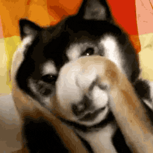

Hi, My name is Paolo Romulus O. Barbosa.
Since when I was young I really love to explore and play video games. even though I have a lot of friends around me I really wanted to be a lone wolf because I believe being independent is one of the key in order to be strong mentally and spiritually. The reason why I chose this course because I wanted to know more about technologies and I believe techonology will have a huge impact in the future. I don't want to brag my skills or talents because I want to express not to impress.
These guys are my friends and the real ones that you will ever meet.
I really love having pets when I was a kid but I constantly got heartbreaks because they died year after years had passed but my family had 2 pets right now.
Coleen Trinidad